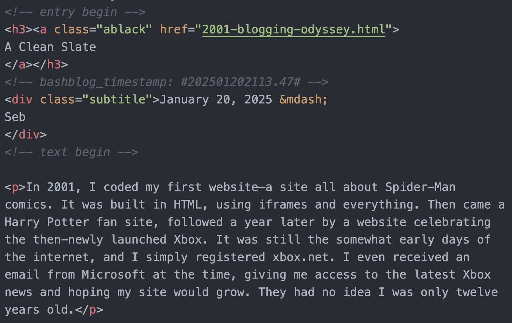

A Clean Slate
In 2001, I coded my first website—a site all about Spider-Man comics. It was built in HTML, using iframes and everything. Then came a Harry Potter fan site, followed a year later by a website celebrating the then-newly launched Xbox. It was still the somewhat early days of the internet, and I simply registered xbox.net. I even received an email from Microsoft at the time, giving me access to the latest Xbox news and hoping my site would grow. They had no idea I was only twelve years old.
All these website projects were abandoned as quickly as they were conceived. Once the novelty wore off, I jumped to the next thing. Paralyzed by the high bar I set for myself, the allure of starting an entirely new project always seemed more enticing, and I was never able to push through with one.
This has been a recurring issue throughout my life.
Two years ago, I started working on a website also called Wabisebi. It began as an idea to blog about my interest in Japan. Then came additional ideas: book reviews, artist spotlights, and a language study section. I even hired two coders to help me with custom templates. I shared with people that I was working on this big blog. And then, as always, the novelty wore off. The thought of having to fill the entire blog and illustrate everything started to feel like an obligation.
Two things I came across recently while reading made me think that I should do things differently if I want to actually produce something meaningful.
 image description